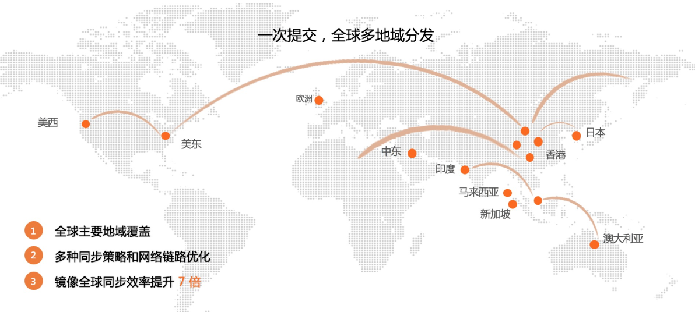

点击下载《不一样的 双11 技术：阿里巴巴经济体云原生实践》
本文节选自《不一样的 双11 技术：阿里巴巴经济体云原生实践》一书，点击上方图片即可下载！
作者
谢于宁（予栖） 阿里云容器服务高级开发工程师
罗晶（瑶靖） 阿里云容器服务高级产品经理
邓隽 阿里云容器服务技术专家
导读：2019 年天猫 双11，阿里巴巴核心系统首次实现 100% 上云。面对全球最大的交易洪峰，阿里云扛住了每秒 54.4 万笔的交易峰值，这是“云原生”与“天猫全球狂欢节”的一次完美联名。
（图为 2019 年天猫 双11 成交额）
容器镜像服务作为阿里巴巴经济体云原生领域的重要基础设施之一，早在 双11 备战期间就已面临大规模分发需求。为了更好地支持这一需求，产品提前进行规划及迭代更新，全面提升了大规模分发场景下的性能、可观测性和稳定性。在新的 双11 来临前，容器镜像服务新增了数 PB 的镜像数据，月均镜像拉取达数亿次。同时产品提供了云原生应用交付链等功能，全面覆盖阿里巴巴经济体及云上用户在云原生时代的使用需求。
本文将介绍容器镜像服务如何通过提升产品能力来应对云原生应用万节点分发场景下的新发展和新挑战。
随着云原生技术的迅速普及，Kubernetes 已经成为事实上应用容器化平台的标准，成为了云原生领域的“一等公民”。
Kubernetes 以一种声明式的容器编排与管理体系，让软件交付变得越来越标准化。Kubernetes 提供了统一模式的 API，能以 YAML 格式的文件定义 Kubernetes 集群内的资源。这一些 YAML 格式的资源定义使得 Kubernetes 能轻松被上下游系统所集成，完成一系列原本需要用非标准化脚本、人工来完成的操作。同时社区根据应用交付场景及需求，在原生 YAML 格式的资源定义文件之外衍生出了更多系列的云原生应用交付标准，例如 Helm Chart、Opeartor、Open Application Model 等。
（图为云原生应用交付标准演进）
除了云原生应用交付标准推陈出新，用户对交付方式也提出了更高的要求。越来越多的用户期望能以流程化、自动化、更安全的方式交付云原生应用，因此单纯的万节点分发场景已经演化成万节点分钟级多环节协同分发。再加上全球化业务发展，这意味着在分钟级时间内完成各个环节之后，还需再完成全球化分发，这对支撑云生应用分发的平台提出了更高的要求。
通过控制容器镜像大小、采用 P2P 分发镜像层、优化 Registry 服务端等方式，我们极大优化了大规模分发的性能，最终达成了万节点分钟级分发的目标：
（图为镜像大规模分发的优化策略）
为了让拥有同样需求的企业客户能够享受到如上一致的分发能力和体验，容器镜像服务产品在 2019 年 3 月正式推出了容器镜像服务企业版（ACR Enterprise Edition）。容器镜像服务企业版提供了企业级云原生资产托管能力以及云原生应用全球化同步、大规模分发能力，适合有着高安全需求、多地域业务部署、拥有大规模集群节点的企业级容器客户。除此之外，容器镜像服务企业版还在云原生资产托管、交付、分发等几个方面进一步提升云原生应用万节点分钟级分发协同体验。
在应用交付物层面，容器镜像服务企业版目前支持容器镜像、Helm Chart 两类云原生应用资产的全生命周期管理；
在访问安全层面，产品提供了独立网络访问控制功能，可以细粒度控制公网及 VPC 网络的访问策略，仅允许符合策略的来源方访问资产，进一步保障云原生资产的访问安全；
在访问体验层面，产品提供容器集群透明拉取插件，支持容器镜像透明拉取，保障业务在弹性场景极速拉取镜像，不因凭证配置有误导致业务更新或扩容异常。
（图为容器镜像服务企业版支持云原生应用交付）
云原生应用生产环节，用户可以直接上传托管容器镜像、Helm Chart 等云原生资产；也可以通过构建功能自动从源代码（Github、阿里云 Code、GitLab 等来源）智能构建成容器镜像。同时为了解决流程化、自动化、更安全的方式交付云原生应用这一需求，容器镜像服务企业版引入了云原生应用交付链功能。云原生应用交付链以云原生应用托管为始，以云原生应用分发为终，全链路可观测、可追踪、可自主设置。可以实现一次应用变更，全球化多场景自动交付，从流程层面极大地提升了云原生应用万节点分发的效率及安全性。
（图为控制台创建云原生应用交付链）
云原生应用交付环节，支持自动发起静态安全扫描并自定义配置安全阻断策略。一旦识别到静态应用中存在高危漏洞后，可自动阻断后续部署链路。用户可基于漏洞报告中的修复建议，更新优化构建成新的镜像版本，再次发起交付。
云原生应用分发环节，当前置环节完成无阻断后，云原生应用正式进入全球化分发及大规模分发环节。为了保障万节点分钟级分发协同完成，容器镜像服务联合容器服务、弹性容器实例等云产品提供了端到端的极致分发体验。针对全球化分发，由于基于细粒度同步策略调度、同步链路优化等优化手段，云原生应用的全球同步效率相比手动同步提升了** 7 倍**。

（图为云原生应用的全球化分发）
在 P2P 大规模分发方面，产品针对云环境多次优化基于 Dragonfly 的分发方案，最终通过多个创新技术解决了大规模文件下载以及跨网络隔离等场景下各种文件分发难题，大幅提高大规模容器镜像分发能力。平均镜像大规模分发效率比普通方式提高数倍，适用于容器集群单集群节点数达 100 及以上的场景。
(图为基于 P2P 的分发流程示意）
除了 P2P 大规模分发手段外，为了更好地满足特定场景下的大规模分发需求，产品还支持基于镜像快照的大规模分发方式。基于镜像快照的分发方式，可避免或减少镜像层的下载，极大提高弹性容器实例创建速度。在容器集群（ASK）及弹性容器实例（ECI）的联合使用场景下，产品可以支持** 500 节点秒级**镜像拉取，实现业务突发场景下极速扩容。
在功能及性能指标满足云原生应用万节点分钟级分发协同需求外，容器镜像服务还对平台能力进行了提升和优化，保障了分发过程的可观测性及稳定性。同时平台提供了集成能力，进一步延展云原生应用分发的使用场景和价值。
稳定性层面的具体提升及优化工作从监控报警、容错容灾、依赖治理、限流降级、容量规划等几个方面展开。
在依赖治理方面，平台对云原生应用交付链中的相关重点环节及外部依赖进行统一管理，提升交付链整体交付能力，帮助用户识别热点仓库及追踪交付链执行结果；
在限流降级方面，平台分析识别云原生应用分发核心环节的主次业务功能，优先保障主要业务逻辑完成，次要业务逻辑可降级延后处理；
在容量规划方面，平台根据上下游业务变化情况，对资源进行按需扩容，确保云原生应用正常交付完成。
（图为平台的稳定性保障策略）
基于平台提供的丰富的集成能力，用户还可以将容器镜像服务企业版作为云原生资产托管及分发的基础设施，为他们的用户提供云原生应用分发能力。
其中，容器镜像服务企业版支撑阿里云云市场构建容器应用市场，支撑容器应用市场的容器商品托管及商业化分发，构建云上云原生生态闭环。ISV 服务商，例如 Intel、Fortinet、奥哲，将容器化商品以容器镜像或者 Helm Chart 的形式在云市场快速上架，实现标准化交付、商业化变现。市场客户也可以从容器应用市场获取到优质的阿里云官方及 ISV 容器镜像，快速部署至容器服务容器集群，享受到阿里云丰富的云原生生态。
（图为容器应用市场流程示意）
从支持阿里巴巴 双11 大规模分发需求，到全面覆盖阿里巴巴经济体及云用户的云原生资产托管及分发需求，再到支撑构建云上容器生态闭环，阿里云容器镜像服务已成为了云原生时代的核心基础设施之一，释放云原生价值的重要加速器。容器镜像服务也将持续为用户带来更加优异的云原生应用分发功能、性能及体验。
本书亮点
“阿里巴巴云原生关注微服务、Serverless、容器、Service Mesh 等技术领域、聚焦云原生流行技术趋势、云原生大规模的落地实践，做最懂云原生开发者的技术圈。”